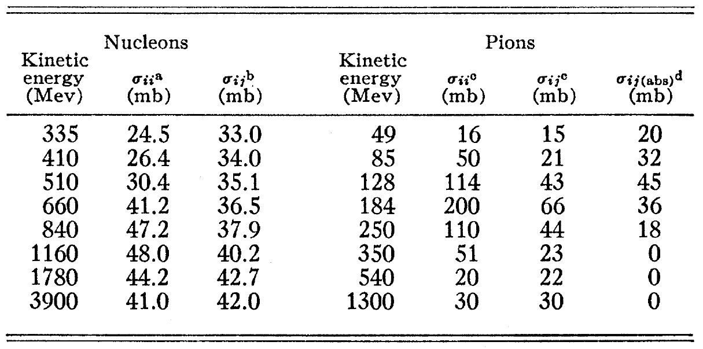
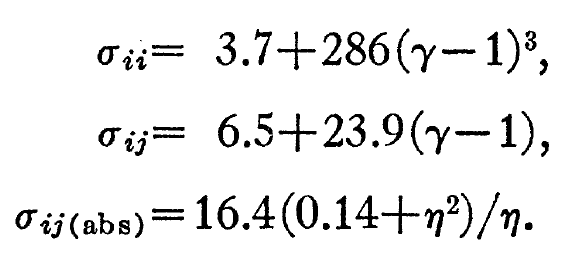
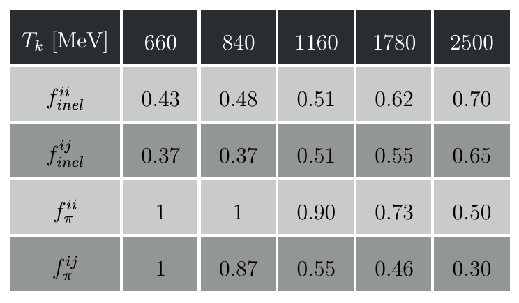
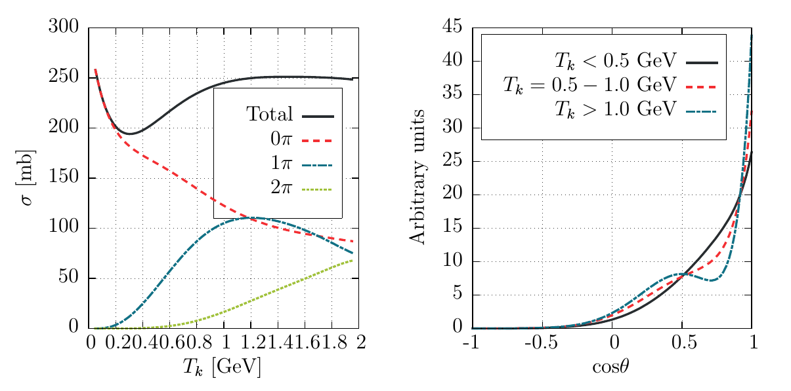
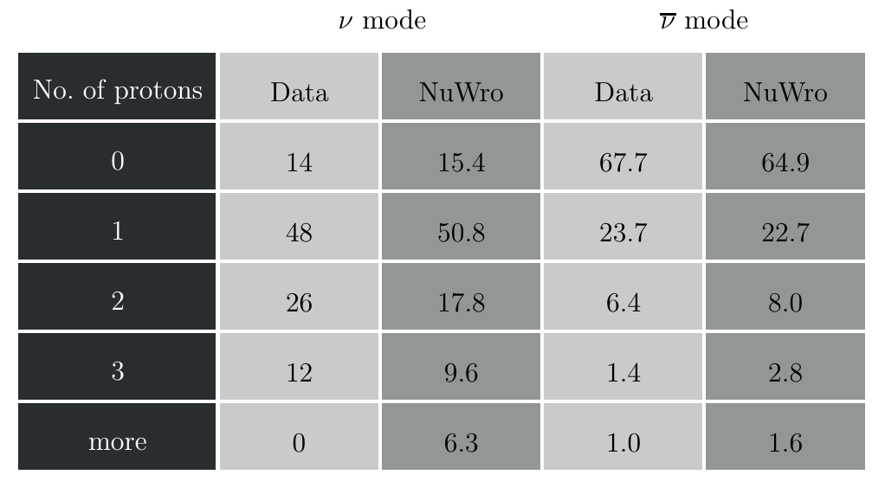
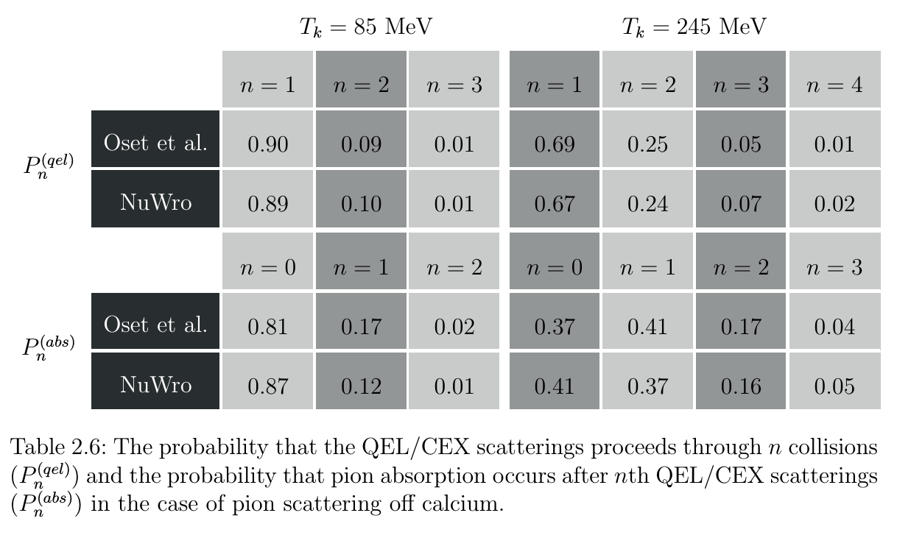
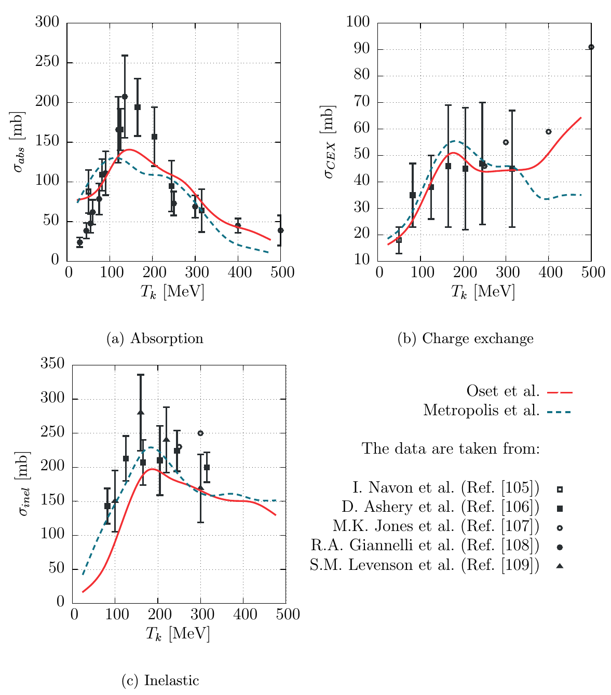

The implementation of intranuclear cascade
Tomasz Golan (on behalf of NuWro Collaboration)
03-05.12.2017, NuWro Workshop 2017
Cascade by Metropolis
Intranuclear cascade
- Script: N. Metropolis
- Director: J. Sobczyk
- Cast: C. Juszczak, T. Golan, K. Niewczas
Total cross section
src: N. Metropolis et al., Phys. Rev. 110 (1958) 204
Nucleons
- \(\sigma_{ii}\) - same isospin
- \(\sigma_{ij}\) - different isospin
Pions
- \(\sigma_{ii}\) - \(\pi^+p\) or \(\pi^-n\)
- \(\sigma_{ij}\) - \(\pi^-p\) or \(\pi^+n\)

Total cross section (low energies)
Nucleons below \(335\) MeV

- \(\beta\) - velocity of incoming nucleon
Pions below \(51\) MeV

\(\gamma\) - total energy in \(m_{\pi^0c^2}\)
\(\eta\) - momentum in \(m_{\pi^0c}\)
Interaction parameters (nucleons)
\(f_{inel}\) - the fraction of pion production
\(f_{\pi}\) - the fraction of single pion production
angular distribution in CMS
\[\frac{d\sigma}{d\Omega} = A\cos^4\theta + B\cos^3\theta + 1\]

Interaction parameters (pions)
\(f_{inel}\) - the fraction of pion production
\(f_{\pi}\) - the fraction of single pion production
angular distribution in CMS
\[\frac{d\sigma}{d\Omega} = A\cos^4\theta + B\cos^3\theta + 1\]
- \(f_{CE}\) - the fraction (of inelastic events) that is charge exchange

Cascade algorithm
The main loop
General idea
until there are particles to propagate
until there are nucleons in nucleus
take a particle from the queue
calculate free path
move particle
if there is no interaction
put the particle back to the queue
otherwise
generate interaction
put all created particles
into the queue

Free path
- The probability of passing \(\lambda\) without any interactions
\[ P(\lambda) = e^{-\lambda / \tilde\lambda}\] - Mean free path
\[\tilde\lambda = \left[\sigma_p\rho_p(r) + \sigma_n\rho_n(r)\right]^{-1}\] - Free path (an interaction happens if \(\lambda < 0.2\) fm)
\[\lambda = - \tilde\lambda\cdot\ln(\text{rand[0,1]})\]
N-N interactions

\(\pi\)-N interactions

Improvements of cascade model in NuWro (nucleons)
all changes are done in a way to keep the structure the same
N-N inelastic

based on experimental data
proton-Carbon scattering

N-N nuclear correction
src: V.R. Pandharipande and S.C. Pieper, PRC45 (1992) 791

- effective mass calculated using potential form R.B. Wiringa, PRC38 (1988) 2967

ArgoNeut data

src: K. Partyka, “Exclusive 1mu+np topologies in ArgoNeuT”, NuInt12, 2012
O. Palamara, “QE or not QE, that is the question”, INT workshop, Seattle, 2013
Binding energy
binding energy is subtracted from nucleon energy in the primary vertex
the value is stored and use later in the cascade
nuclear potential is defined as
\[V(r) = E_F(r) + E_B\]nucleon is jailed in a nucleus if
\[T_k < V(r)\]
Improvements of cascade model in NuWro (pions)
all changes are done in a way to keep the structure the same
Low-energy pions
for low-energy pions (\(T_k < 350\) MeV) E. Oset et al (Phys. Lett. B165 (1985) 13–18) is used
\(\Delta\) width modification in nuclear matter
\[\frac{1}{2}\tilde\Gamma \rightarrow \frac{1}{2}\tilde\Gamma - \text{Im}\Sigma_\Delta\]- \(\tilde\Gamma\) - reduced \(\Delta\) width (due to Pauli blocking)
- \(\Sigma_\Delta\) - \(\Delta\) self-energy
\(\Delta\) self-energy
the parametrization of \(\Delta\) self-energy is taken from E. Oset et al., Nucl. Phys. A468 (1987) 631–652
\[\text{Im}\Sigma_\Delta(E_\pi) = -\left[C_Q(\rho/\rho_0)^\alpha + C_{A2}(\rho/\rho_0)^\beta + C_{A3}(\rho/\rho_0)^\gamma\right]\]\(C_Q\), \(C_{A2}\), \(C_{A3}\), \(\alpha\), \(\beta\), \(\gamma\) - functions of pion energy
\(C_{A}\) - pion absorption
implementation: cross sections 2D tables (\(T_k\) and \(\rho\))
Comparison with Oset et al.

Comparison with Oset et al.

High-energy pions
Metropolis-like tables based on data
new parameter \(f_{2\pi}\) gives the fraction of double pion production among all non-single pion production processes

Charge fragmentation
for single pion production see a table on the right
for double pion production \(ii\): half is assumed to be with neutal pion
all other cases - equally likely

Angular distributions
for QEL and CEX \(\pi\)-N scattering (in CMS)
\[\frac{d\sigma}{d\Omega} \sim \sum\limits_{i=0}^{7}a_i\cos^i\theta\]with \(a_i\) being extracted from SAID model
separately for each channel (\(ii\), \(ij\), \(0\), and CEX)
Pion-Carbon scattering
